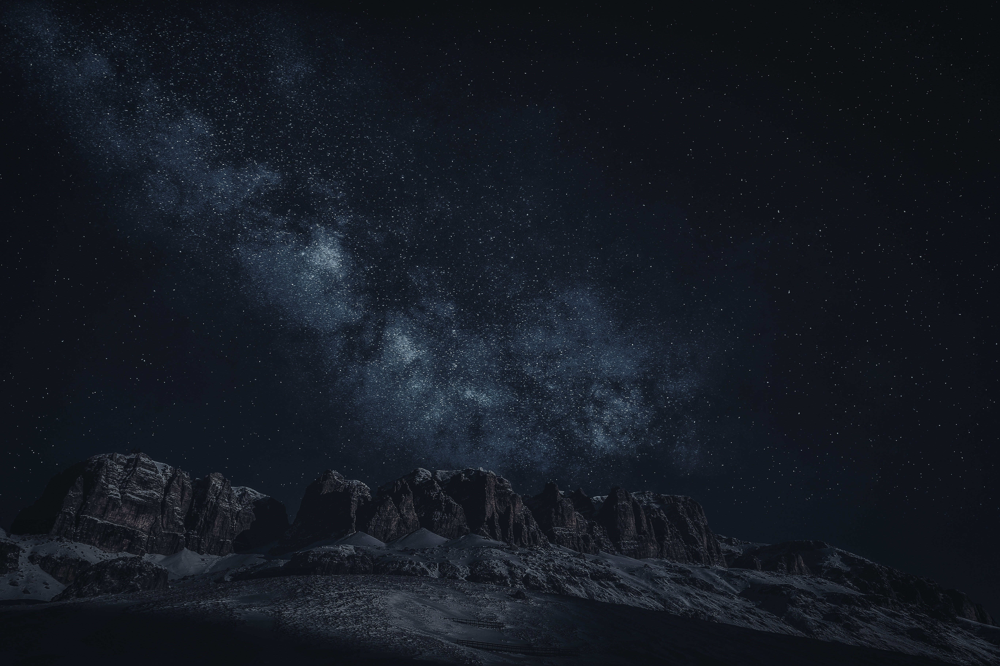

a ccool stary night
galaxy corp

galaxy planet sector
galaxy corp

However alert we are, antiquity remains an unknown, unanticipated galaxy.the mystery of galaxy ,it stucking you ever each seen.
When you look at the sky of stars , you feel that you are not just from any particular piece of land, but from the solar system.
The moon gravitates towards theearth & by the frce of gravity is continually drwn off frm a rectilinear motion& retained in its orbit.
"When you look at the stars and the galaxy, you feel that you are not just from any particular piece of land, but from the solar system." ...
'Eclipse' is a concept piece, and its concept centers on 36 large light bulbs strung from above in a geometrical pattern and at different heights, some of them at times down below the dancers' chest level...
Everything turns, rotates, spins, circles, loops, pulsates, resonates, and repeats. Circles of life, born from pulses of light, vibrate to breathe, while spiraling outwards for infinity through the lens of time...